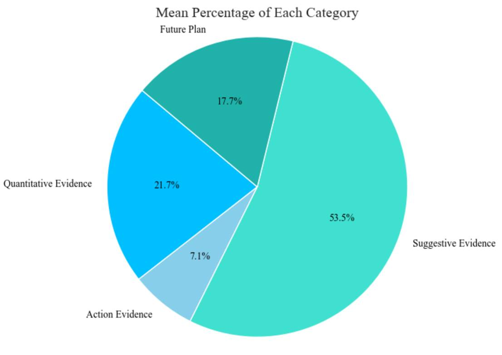

SUMMARY
Business Ethics:CDLHT is committed to maintaining high integrity and ethical standards, with zero cases of misconduct and non-compliance in FY 2021. They aim to uphold a strong risk management culture and have policies in place to prevent corruption, bribery, and misconduct.
Innovation Management:CDLHT has approximately $2.9 billion in assets under management as of December 31, 2021, and has introduced seven new ESG material topics approved by the Board, including Climate Resilience, Environmental Stewardship, Sustainable Development Goals, and Data Privacy and Cyber Security, to drive its sustainability efforts and performance.
Human Rights:CDLHT properties collaborate with local charitable and social organizations to promote responsible citizenship and engage in community initiatives. In 2021, CDLHT had a total of 4,081 employees across all hotels, providing 16,726 training hours, with an average of 4.96 training hours per employee. Additionally, CDLHT utilizes Hilton's LightStay platform at Hilton Cambridge City Centre to track, manage, report, and improve environmental and social impacts.
Employees Gender & Age Diversity:CDLHT properties collaborate with local charitable and social organizations to promote responsible citizenship, aiming to create a positive impact on society through community engagement. In 2021, CDLHT had a total of 4,081 employees across all hotels, providing a total of 16,726 training hours, with an average of 4.96 training hours per employee. Additionally, CDLHT continues to implement Hilton's LightStay platform at Hilton Cambridge City Centre to track, manage, report, and improve environmental and social impacts.
Operational Eco-Efficiency:CDLHT is focused on reducing energy consumption across its portfolio by implementing energy-efficient measures such as replacing halogen lights with LEDs and installing sensor lights to detect motion. The company has also started tracking and reporting fuel consumption, including Natural Gas, Diesel, and Liquefied Petroleum Gas, as a separate metric to monitor its environmental impact.
Low Carbon Strategy:CDLHT is focused on reducing energy consumption across its portfolio by implementing energy-efficient measures such as sensor lights and transitioning to LED lighting. The company has also started tracking and reporting fuel consumption as a separate metric, including Natural Gas, Diesel, and Liquefied Petroleum Gas.
Water Related Risks:CDLHT is focused on reducing energy consumption across its portfolio by implementing energy-efficient measures such as replacing halogen lights with LED lights and using sensor lights to detect motion. The company has also started calculating and reporting fuel consumption as a separate metric, including Natural Gas, Diesel, and Liquefied Petroleum Gas.
Waste Generation:The total weight of non-hazardous waste for Singapore Overseas All Hotels is 335,944.89 metric tonnes, with 271,265.45 metric tonnes going to landfill. Additionally, the hotels in Perth have eliminated the provision of plastics and plastic guest amenities by installing dispensers for shampoo and soap.
Occupational Health & Safety:Clermont Hotel Trust (CERT) had no work-related fatalities and no recordable injuries in FY 2021. The company engaged with stakeholders primarily through board meetings and consultations with external ESG consultants. In terms of employee turnover, the company hired 271 new employees in Singapore and 127 overseas, with turnover rates ranging from 2.60% to 8.15%.
Supply Chain Management:The company engages with stakeholders, including the Board of Directors, through board meetings, email communication, and ad-hoc briefings with external ESG consultants. They also engage with government and regulators through participation in surveys and focus groups to address social and environmental legislation and risk management.
Green House Gas Emissions:The company is replacing traditional gas with methane and green hydrogen, leading to a reduction in carbon emissions by utilizing low-carbon energy sources. This shift is expected to significantly decrease the company's environmental impact.
Climate Strategy:The hotelier reports that their hotels are currently operating at higher capacities compared to the previous fiscal year 2020, as the effects from the pandemic are stabilizing. However, specific quantitative data on the increase in capacity was not provided in the text.
Labor Practice Indicators:The company maintains fair employment standards and competitive remuneration for employees based on merit and legal compliance. In the reporting period, 673 employees left the company, with 60% being male and 40% female.
Average Training Hours Per Employee:The company maintains fair employment standards and competitive remuneration for employees based on merit and legal compliance. In the reporting period, 673 employees left the company, with 60% being male and 40% female.
